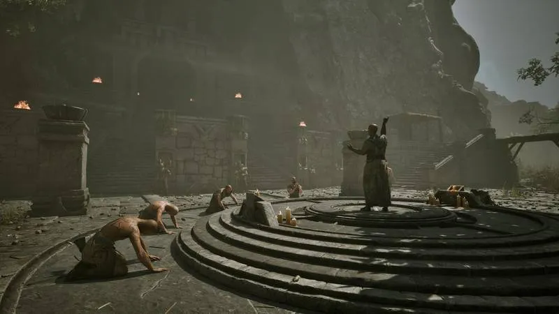

🔐 Complete Lockpicking Guide
Sliding plates, gold pins, interconnected bars — battle-tested solutions, not made-up guesses
⚡ Quick Reference Card
🎯 Goal: Push every pin to the center position (hole 4). When the pin pops up, that plate is solved.
⚠️ Core challenge: Moving one plate moves others too. Some linked in the same direction, some opposite, some completely independent.
💡 Training: Find Fingers at the Old Camp (behind the arena, near Snaf's cauldron). Spend 10 LP + 100 Ore for Professional (4 mistake tolerance), 20 LP + 200 Ore for Master (6 mistake tolerance).
🛠️ Lockpick sources: Fisk (Old Camp market, ~13-15 Ore each), Mordrag, Dexter. Also lootable from chests, barrels, and corpses.
Table of Contents
🎯 Tiered by Experience
🟢 Never picked a lock? Start with "How Lockpicking Actually Works" and "Solving Strategy" — no skipping needed.
🟡 Already know how to slide plates? Jump to "Mistake Tolerance & Durability" for trainer cost reference.
🔴 Speedrunners / multi-playthrough: Professional lockpicking (10LP+100 Ore) is the optimal choice. Master (20LP+200 Ore) is poor value — the benefit of 6 vs 4 mistakes is not worth 10 extra LP. Shark-tier players dump the saved LP into weapon training instead.

How Lockpicking Actually Works
Plate Structure
Each lock consists of 4 to 7 sliding plates. Each plate has 7 holes with a small gold/copper pin inside. You need to slide every pin to the center position (hole 4). When a pin is in place it pops up — that means that plate is done.
Interconnected Plate Mechanics
This is the most frustrating part of the system: moving one plate can move others. There are three types of linkage:
- Same-direction: both plates move the same way
- Opposite-direction: one goes left, the other goes right
- Independent: not affected by any other plate
You need to figure out each lock's linkage relationships first, then position each pin in the correct order.
Mistake Tolerance & Durability
| Skill Level | Mistake Tolerance | Break Consequence | Training Cost |
|---|---|---|---|
| Untrained | 2 | Lock resets (start over) | — |
| Professional | 4 | No reset, but one linkage removed | 10 LP + 100 Ore |
| Master | 6 | No reset, another linkage removed | 20 LP + 200 Ore |
Break condition: Pushing a pin past hole 1 or hole 7. The edges are the death line. Never let any pin sit at the extreme ends.
Where to Get Lockpicks
- Fisk (Old Camp market) — ~13-15 Ore each, most reliable source
- Mordrag and Dexter also sell them
- Loot from chests, barrels, and corpses
- Steal from guards or fellow rogues
Tip: Always carry at least 10 lockpicks. Running out inside a mine is embarrassing, and trekking back to buy more wastes a lot of time.
Solving Strategy — What Actually Works
💾 Save before lockpicking
Linkage relationships are fixed for each lock — they don't randomize. Test once to map out which plates affect which, take notes, then reload.
🔍 Test plates one by one
Move each plate one notch solo and watch what else moves, in which direction. This is the first step for solving any lock.
🔗 Start with the most-connected plate
Solve the plate that affects the most others first. Once it's in place, the remaining linkage relationships become simpler.
⚠️ Stay away from the edges
Never let a pin rest at position 1 or 7. Keep a one-notch buffer from the edge. Hitting the edge = broken pick.
✅ Independent plates last
Handle independent plates at the very end — they won't disturb the pins you've already placed.
⏰ Watch your surroundings
Time does not pause while lockpicking. NPCs can see you breaking into someone's chest and will come after you.
🔓 Lock Solutions Library
Step-by-step solutions for specific named locks. All sequences assume a non-upgraded Lockpicking skill — once you train/upgrade with Fingers, the linkages change and these sequences no longer apply. Save before picking.
| Lock | Solution steps | Reward |
|---|---|---|
| Broken Tower Chest #1 Broken Tower | P2 Left ×4 → P5 Right ×6 → P6 Left ×4 → P2 Left ×5 → P5 Right ×5 → P3 Right ×3 → P4 Right ×3 → P1 Left ×1 → P6 Left ×1 | Crude Sword, Fire Bolt, Lockpick, 26 Ore |
| Broken Tower Chest #2 Broken Tower | P1 Left ×1 → P4 Right ×1 → P5 Left ×6 → P3 Right ×1 → P4 Right ×1 → P2 Left ×6 → P3 Right ×1 → P6 Left ×1 → P1 Left ×3 → P4 Right ×3 → P5 Left ×4 → P3 Right ×3 → P4 Right ×3 → P2 Left ×6 → P1 Left ×3 → P3 Right ×3 → P4 Right ×3 → P5 Left ×3⚠️ 另有 6 步短版流传，两版冲突，以长版为准 | Ring of Iron Skin, Essence of Strength, Iron ×4 |
| Xardas Tower Chest Xardas Tower 3F | P4 Left ×4 → P2 Left ×4 → P4 Left ×4 → P3 Right ×4 → P4 Left ×4 → P6 Left ×5 → P1 Left ×6 → P4 Left ×5 → P3 Right ×6 → P4 Left ×6 → P2 Left ×3 → P5 Left ×3 → P6 Left ×3 | Ring of Lesser Invincibility, Elixir of Life/Spirit recipes |
| Firestorm Chest 6-plate lock (A–F) | A Right ×3 → C Right ×5 → F Right ×5 → E Left ×1 → A Right ×3 → B Left ×3 → E Left ×6 → C Right ×3 → A Right ×6 → D Right ×3 → E Left ×3✅ Speedrun 论坛原文直取 | — |
| Shrine of Innos Chest Shrine of Innos | P1 Right ×3 → P3 Right ×5 → P6 Right ×5 → P2 Left ×3 → P5 Left ×4 → P1 Right ×6 → P5 Left ×6 → P3 Right ×3 → P1 Right ×3 → P4 Right ×3 | Essence of Life, Gold, 3 Lockpicks |
| Blackmailer's Chest Bridge between Old & New Camp | P5 Right ×2 → P2 Left ×4 → P4 Right ×6 → P5 Right ×5 → P3 Left ×4 → P1 Left ×2 → P6 Right ×2 | 2 Lockpicks, 23 Ore + XP |
| Scatty's Chest Old Camp Arena (Scatty's hut) | P5 Right ×1 → P3 Left ×5 → P5 Left ×2 → P2 Right ×2 → P5 Left ×6 → P4 Left ×6 → P5 Left ×6 → P3 Left ×2 → P5 Left ×2 → P2 Right ×2 → P5 Right ×2 → P4 Right ×1 → P1 Right ×2⚠️ 另有 9 步短版（IGN/PCGamer），两版冲突，建议存档后试 | Scatty's Ring (quest), 16 Ore |
| Cor Kalom's Chest Swamp Camp | P4 Left ×6 → P2 Right ×5 → P1 Left ×4 → P4 Right ×2 → P3 Right ×2 | — |
| Santino's Chest Old Mine (Santino's hut) | P2 Left ×6 → P3 Right ×6 → P4 Right ×3 → P2 Left ×3 → P5 Right ×3 | 33 Ore |
| Arto & Thorus' Room Chest #1 Old Camp castle | P5 Right ×1 → P1 Left ×6 → P6 Right ×3 → P4 Left ×4 → P3 Left ×6 → P2 Right ×3 → P5 Right ×3 → P1 Left ×6 → P4 Left ×4 → P6 Right ×6 → P3 Left ×4 → P2 Right ×3 → P4 Left ×3 | Ring of Strength, 22 Ore |
| New Camp Tavern — secret door New Camp tavern (behind Silas) | P4 Left ×2 → P6 Right ×3 → P2 Right ×3 → P6 Right ×3 → P2 Right ×1 → P3 Right ×2 → P5 Left ×2 → P2 Right ×2 → P6 Right ×5 → P3 Right ×4 → P5 Left ×1 → P2 Right ×1 → P6 Right ×2 | — |
| New Camp Tavern — Bran's Axe chest New Camp tavern | P3 Right ×3 → P4 Left ×4 → P6 Right ×6 → P1 Left ×2 → P3 Right ×6 → P4 Left ×3 → P5 Left ×2 → P2 Right ×2 → P6 Right ×3 | Bran's Axe |
Sources: Game8 lock solution pages, the Speedrun.com Firestorm thread, and community guides. A few sequences have conflicting short/long versions in circulation — those are flagged. If a sequence doesn't work, reload your save and use the interactive solver instead.
Frequently Asked Questions
Can a broken lock be fixed?
After Professional or Master training, breaking a lock does not reset it — it only removes one linkage. Untrained breaks cause a full lock reset, meaning you start over from scratch. So get at least Professional before tackling important chests.
Can you beat the game without learning lockpicking?
Most locks have alternative routes (detours, keys, combat), but you'll miss a lot of good loot. Strongly recommend spending at least 10 LP for Professional — the return on investment is exceptionally high.
Does this site's lockpicking tool still work?
Our Lockpicking Guide was built pre-release based on speculation, and its underlying assumptions don't quite match the final sliding-plate system. It's fine as an interactive demo to play with, but for real locks, the manual methods above are more reliable.
Why do locks get harder and harder?
By design. Early training locks have only 3-4 plates with simple linkages. Late-game chests go up to 7 plates with intricate linkage webs. Get Master level (6 mistake tolerance) before tackling difficult locks — it makes things much smoother.